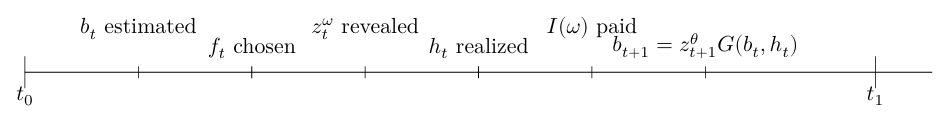
Suitability of Index Insurance in Fisheries
Oral Examination
Nathaniel Grimes
Bren School of Environmental Science & Management
Last updated: Dec 06, 2024
Fishers vulnerable to financial shocks from environmental variability
Few financial risk tools to protect against shocks
Index insurance has the potential to address this challenge
I explore how index insurance could incentivize behavior change in fishers and managers, and what information is needed to design new contracts
Behavioral Effects of Index Insurance
Research Questions
Will Index Insurance change fisher harvest decisions in unconstrained settings?
What influences the direction and magnitude of behavior changes?
How much could insurance change harvest when applied to real world fisheries?
Methods
Mathematical proof using novel stochastic, fishery production function
Numerical simulation to test influence of certain parameters
Calibrate with production elasticity estimates from Norwegian fisheries
Fishers experience two sources of risk
\(\theta\): Biological risk
\(\omega\): Productivity risk from weather
\(f(X)\): Concave Technology Function
\(\hat\beta\): Mean Stock Abundance
\[ y=f(X)\hat\beta+\theta f(X)+\omega h(X) \qquad(1)\]
Possible examples of \(\omega\) and \(h(X)\)
Storms: Larger vessels lower risk and make it easier to fish in foul weather
Spatial: Experienced captains choose more consistent fishing grounds
Any risk not captured by the biological risk
Fishers maximize expected utility with an exogenous insurance contract
\[ \begin{aligned} U\equiv\max_{x}\mathbb{E}[U]=\int^{\infty}_{-\infty}&\left[\overbrace{ \int^{\bar\omega}_{-\infty}j_{\omega,\theta}(\omega,\theta)u(\pi(x,\hat{B},\theta,\omega)+(1-J(\bar\omega))\gamma)d\omega}^{\text{Bad Year}} \right.\\ &\left.+\underbrace{\int^{\infty}_{\bar{\omega}}j_{\omega,\theta}(\omega,\theta) u(\pi(x,\hat{B}, \theta,\omega)-J(\bar\omega)\gamma)d\omega}_{\text{Good Year}}\right] d\theta \end{aligned} \qquad(2)\]
\(x\): Input choice
\(\pi\): Profit
\(j_{\omega,\theta}\): Joint density
\(u\): Concave Utility function
\(\gamma\): Insurance payout
\(J(\bar\omega)\): Cumulative distribution of \(\omega\)
Use Implicit Value Function to solve for changes in input with an exogenous change in insurance
Objective: To Sign Equation 3
\[ \frac{\partial x^{*}}{\partial \gamma}=-\frac{\frac{\partial U}{\partial x \partial \gamma}}{\frac{\partial^2 U}{\partial x^{2}}} \qquad(3)\]
Focus on the numerator
- Conditions of a maximum lead denominator to always be negative
Index Insurance has ambiguous effect on optimal input
Independent
Risk decreasing (\(h_x(x)<0\)) will always lower input use
Risk increasing (\(h_x(x)>0\)) will always increase input use
Perfect Correlation
Risk decreasing inputs are ambiguous
Risk increasing inputs always increase
Index Insurance has ambiguous effect on optimal input
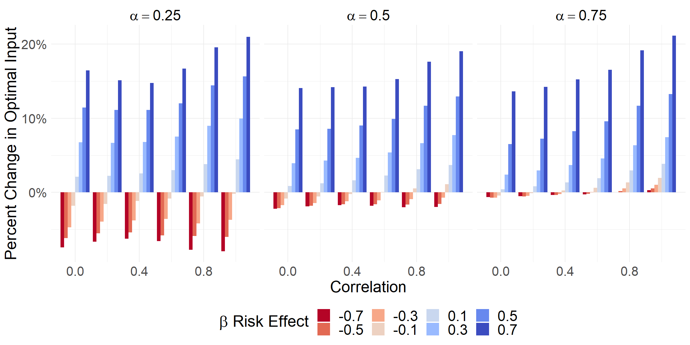
Norwegian fisheries would change optimal harvest with index insurance
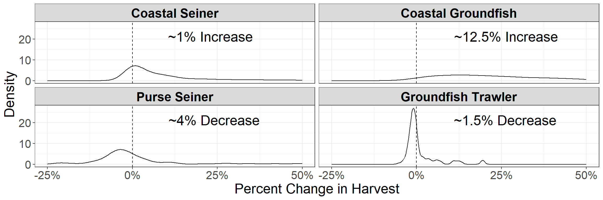
- Tradeoff between mean harvest gain and variance reduction for risk decreasing inputs
Future Steps
Editing final manuscript for submission to JEEM
Tightening focus and discussion
Will send updated draft next week
- Take time over break to review
Manager choices with insurance
Insurance will change unconstrained behavior of fishers
Management places “binding” constraints to protect long term sustainability
Managers have to change quotas to respond to shocks
Insurance can protect financial risk brought on by necessary changes in quota
Research Questions
- Would a manager change their harvest control rule if fishers were protected by index insurance?
- How does the timing of shocks and payouts change decisions?
- How much would biological sustainability improve with updated HCRs?
Manager acts as sole owner maximizing infinite utility stream of fishers
\[ \begin{aligned} \max_{f_t} \sum_{t=0}^\infty\beta^t\mathbb{E}_t&\left[u(f_t,\omega,\theta,I(v))\right]\\ \text{s.t. } b_{t+1}&=z_{t+1}^\theta G(b_t-h_t) \\ h_t&=b_tf_tz_t^\omega \end{aligned} \qquad(4)\]
Two sources of uncertainty
\(\omega\): Current weather shock (measurement, harvest, etc.)
\(\theta\): Growth uncertainty
Concave utility function \(u\)
Insurance contract:
\[ \mathbb{I}[(v)]=\begin{cases} \overbrace{I(v)}^{\text{payout}}-\rho(v) & \text{if } v_t>\bar z \\ \underbrace{-\rho(v)}_{\text{premium}} & \text{otherwise}\end{cases} \]
Formulate as Bellman and use Value Function Iteration to solve
\[ V_t(b_t)=\max_{f_t}\mathbb{E}[u(f_t,\omega_t,\theta_t,I(v_t))+\beta V_{t+1}(z_{t+1}^\theta G(b_t-h_t))] \qquad(5)\]
\(V_t(b_t)\): Value function at time \(t\) given biomass \(b_t\)
Value Function Iteration
Discretize state space and iterate on Bellman equation until value function convergence
Approximate Dynamic Programming
- Timing of insurance may be more conducive to ADP
Preliminary Results
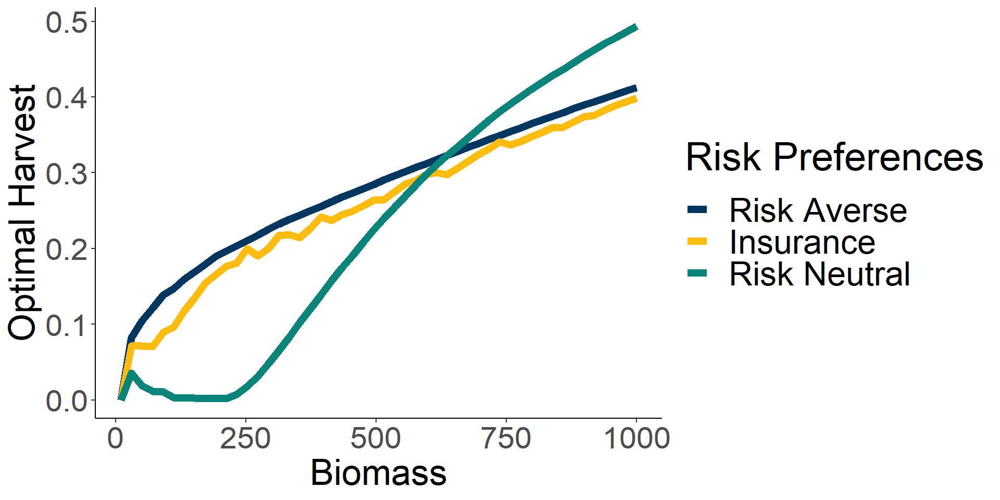
Future Steps
Solve value function iteration with two shocks
- Design insurance contracts for both shocks and solve
Sensitivity analysis on parameters
Compare converged value functions for overall improvement
Forward simulation with new HCR to show the long run impact on biomass
How to design IBI in Fisheries
Basis risk and definition of loss are the greatest impediments to fisheries index insurance uptake
Basis Risk
Need to find weather measures that correlate with fisher income/catch
Environmental variables influence catch, but really difficult to measure
- Non-linear, unobservables, management plays a role
Loss
Loss in fisheries not as clear as in agriculture (Herrmann et al. 2004)
What constitutes a bad year in fisheries?
Fishers catch is not the same each year
Research Questions
- How much would fishers be willing to pay for fisheries insurance contracts?
- Can we design indices to accurately indemnify fishery losses?
- What models and types of contracts can improve index insurance for fisheries?
- What are the most important environmental variables for predicting fishery loss?
Find the premium that makes fishers indifferent between insurance and none
\[ \mathbb{E}[U_{ni}(\pi)]=\mathbb{E}[U_{i}(\pi,I(\omega),\rho)] \]
\(U_{ni}\): utility no insurance
\(U_i\): utility with insurance
\(\pi\): Revenue, landings, etc.
\(\rho\) represents the marginal willingness to pay for insurance
High \(\rho\) means fishers really want insurance
Models with lower basis risk will have higher \(\rho\)
Use different contracts and fishery measures to indemnify loss
Deviation from mean
\[ I(\omega)=\max(0,\bar\pi-\hat{\pi}_t^k(\omega)) \]
Most commonly used in agriculture
\(k\in\{LM,LASSO,RF\}\)
Deviations from Moving Average
\[ I(\omega)=\max(0,\frac{1}{j}\sum^n_{i=n-j+1}\pi_t-\hat{\pi}_t^k(\omega)) \]
\(j\): number of periods to average
- Insurance payouts when \(\omega\) predicts a lower catch than the trigger
Premium
Average previous payouts times a loading factor \(m\)
Vary \(m\) to get WTP
\[ \rho(w)=\mathbb{E}[I(\omega)]m \]
74 California fisheries at the state and port level provide detailed catch data
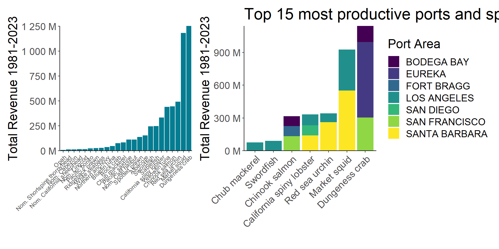
Strictly weather variables cannot account for trends in management
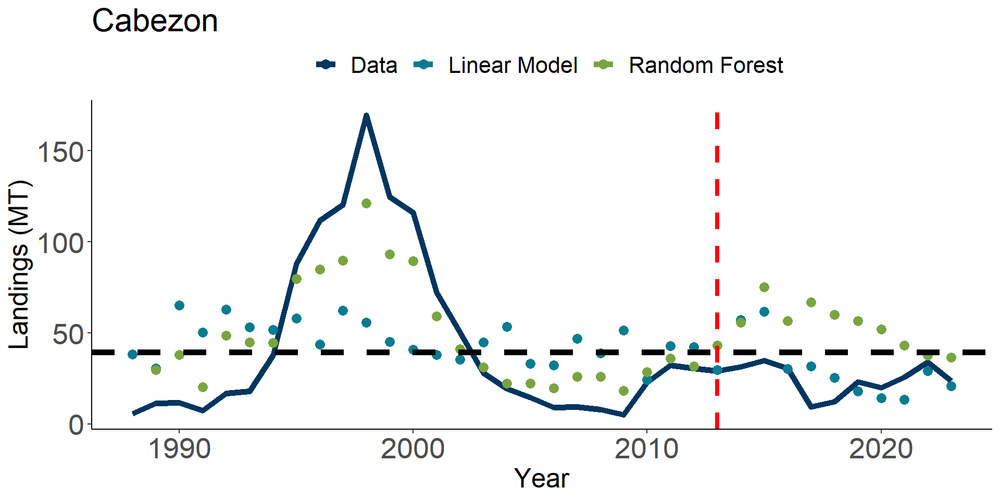
Differences in test and train sets cause models to underperform
Mean strike levels might be problematic in fisheries
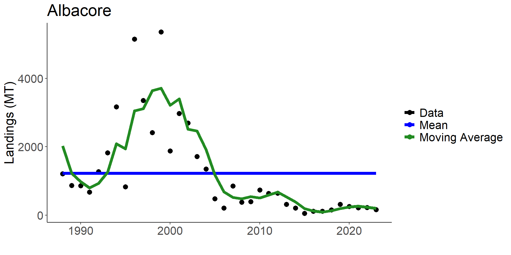
Bias results in the utility measures. If it always pays out you want it badly
Future Steps
Embed management as some form of predictor
Pin down what is the expected amount of loss in a bad year
CPUE might be the better measure of fisher success
Or directly measure biomass?
Run utility models with updated models to find WTP
Extract weather features of importance
Questions?
Appendix
Risk aversion has a large impact on optimal input
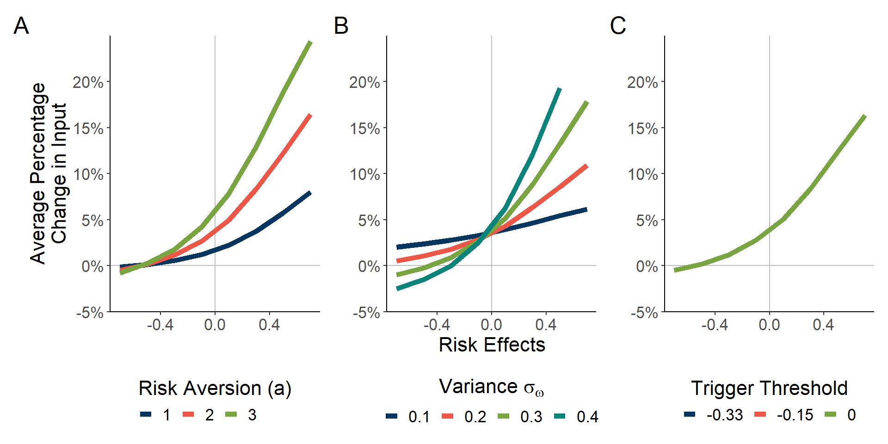
Figure 1: Risk Aversion (A), weather variance \(\omega\) (B), and trigger (C) all influence the magnitude of change in harvest. Mean production elasticity is set to 0.5. Average percent change in input (y-axis) is summarized across all other parameter combinations for each risk effect value of \(\beta\).
Ambiguity is increased with multiple inputs
\[ \begin{aligned} &\frac{\partial x_a}{\partial \gamma}=\frac{-1}{Det}\left[\frac{\partial U}{\partial x_b \partial x_b}\frac{\partial U}{\partial x_a \partial \gamma}-\frac{\partial U}{\partial x_a \partial x_b}\frac{\partial U}{\partial x_b \partial \gamma}\right] \\ &\frac{\partial x_b}{\partial \gamma}=\frac{-1}{Det}\left[\frac{-\partial U}{\partial x_b \partial x_a}\frac{\partial U}{\partial x_a \partial \gamma}+\frac{\partial U}{\partial x_a \partial x_a}\frac{\partial U}{\partial x_b \partial \gamma}\right] \end{aligned} \qquad(6)\]
Proposition 1 In fisheries with two inputs, when \(\theta\) and \(\omega\) are uncorrelated, index insurance will change the optimal use of a specific input in accordance to an input’s own risk effect when the following sufficient condition is true:
\(\frac{\partial U}{\partial x_a\partial x_b}>0\) when both inputs share the same risk effects, and \(\frac{\partial U}{\partial x_a\partial x_b}<0\) when inputs have opposite risk effects.
Otherwise, Index Insurance will have ambiguous effects on optimal input choice.
Proof of single input
\[ \begin{aligned} \small \frac{U}{\partial x \partial \gamma}=\int^{\infty}_{-\infty}j_{\theta}(\theta)\left[ \int^{\bar\omega}_{-\infty}j_{\omega}(\omega)u''(\pi(x,\hat{B},\theta,\omega)+(1-J(\bar\omega))\gamma)\frac{\partial \pi}{\partial x}(x,\hat{B},\theta,\omega)(1-J(\bar\omega))d\omega\right.\\ +\left.\int^{\infty}_{\bar{\omega}}j_{\omega}(\omega) u''(\pi(x,\hat{B},\theta,\omega)-J(\bar\omega)\gamma)\frac{\partial \pi}{\partial x}(x,\hat{B},\theta,\omega)(-J(\bar\omega))d\omega\right] d\theta \end{aligned} \qquad(7)\]
\[ \begin{aligned} \small \frac{U}{\partial x \partial \gamma}=\int^{\infty}_{-\infty}&j_{\theta}(\theta)J(\bar\omega)(1-J(\bar\omega))u''(\theta,\cdot)\\ &\left[ \int^{\bar\omega}_{-\infty}j_{\omega}(\omega)\frac{\partial \pi}{\partial x}(x,\hat{B},\theta,\omega)d\omega -\int^{\infty}_{\bar{\omega}}j_{\omega}(\omega)\frac{\partial \pi}{\partial x}(x,\hat{B},\theta,\omega)d\omega\right] d\theta \end{aligned} \qquad(8)\]
\[ \begin{aligned} \small \frac{U}{\partial x \partial \gamma}=\int^{\infty}_{-\infty}&\overbrace{j_{\theta}(\theta)J(\bar\omega)(1-J(\bar\omega))u''(\theta,\cdot)}^{-}\\ &\left[ \int^{\bar\omega}_{-\infty}\underbrace{j_{\omega}(\omega)\frac{\partial \pi}{\partial x}(x,\hat{B},\theta,\omega)d\omega -\int^{\infty}_{\bar{\omega}}j_{\omega}(\omega)\frac{\partial \pi}{\partial x}(x,\hat{B},\theta,\omega)d\omega}_{+}\right] d\theta\\ <0 \end{aligned} \qquad(9)\]
Lemma 3.1 Individual fisher expected marginal profit of a specific input, \(x_m\), is greater in the good state than expected marginal profit in the bad state when \(h_{x_m}(X)>0\). Expected marginal profit is higher in the bad state when \(h_{x_m}(X)<0\). If \(h_{x_m}(X)=0\), the marginal profits are equivalent in both states.
\[ \begin{aligned} \small \frac{\partial \mathbb{E}[\pi|\omega<\bar\omega]}{\partial x^*_m}-\frac{\partial \mathbb{E}[\pi|\omega>\bar\omega]}{\partial x^*_m}=&\mathbb{E}[\omega h_{x_m^*}(X^*)|\omega<\bar\omega]+f_{x_m^*}(X^*)\hat{B}+\mathbb{E}[\theta f_x(X^*)|\omega <\bar\omega]-c_{x^*_m}(X^*) \\ &-\mathbb{E}[\omega h_{x_m^*}(X^*)|\omega>\bar\omega]+f_{x_m^*}(X^*)\hat{B}+\mathbb{E}[\theta f_x(X^*)|\omega >\bar\omega]-c_{x^*_m}(X^*)\\ =&\mathbb{E}[\omega h_{x_m^*}(X^*)|\omega<\bar\omega]-\mathbb{E}[\omega h_{x_m^*}(X^*)|\omega>\bar\omega] \end{aligned} \qquad(10)\]
Two insurance contracts test timing of payouts
Contract built on \(\omega\) pays out after realization of current period shock
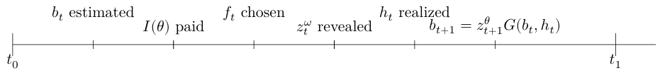
Contract built on \(\theta\) pays out before realization of current period shock
Relatively large percent changes in harvest

Breakdown of Value Function FOC
\[ \begin{aligned} &\mathbb{E}[\pi'(f_t,z_t^\omega)U'(f_t,z_t^\omega,z_t^\theta,I(v))]=\beta \mathbb{E}[G'(b_t-h_t)V'(z_{t+1}^\theta G(b_t-h_t))] \\ &\mathbb{E}[\pi'(f_t,z_t^\omega)]\mathbb{E}[U'(f_t,z_t^\omega,z_t^\theta,I(v))]+\text{cov}[\pi'(f_t,z_t^\omega),U'(f_t,z_t^\omega,z_t^\theta,I(v))] \\ &=\beta \mathbb{E}[G'(b_t-h_t)]\mathbb{E}[V'(z_{t+1}^\theta G(b_t-h_t))] +\text{cov}[G'(b_t-h_t),V'(z_{t+1}^\theta G(b_t-h_t))] \end{aligned} \qquad(11)\]
Binning of \(\omega\)
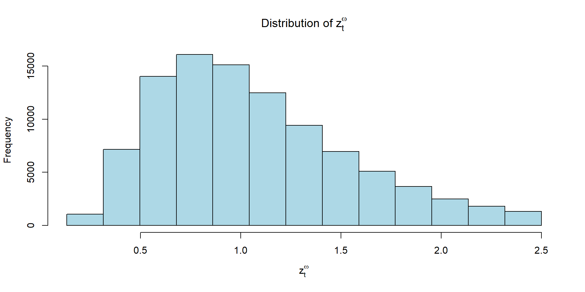
Theory on basis risk impacts on insurance demand
- No risk averse person will buy insurance if the expected payout conditional on a given loss is higher than the commercial premium (Clarke 2016)
\[ \begin{aligned} \kappa(l)&=\frac{\mathbb{E}[\tilde i | \tilde l =l]}{m \mathbb{E}[\tilde i]} & i\text{ = measure of index, } l=\text{ loss} \\ \end{aligned} \qquad(12)\]
Limited to ex-ante analysis of payouts
Utility measures better reflect value of insurance for hypothetical contracts (Kenduiywo et al. 2021; Conradt, Finger, and Spörri 2015; Chen et al. 2024)
Model Outline
Step 1: Train Model on Data
- Perserve time order and split into training (<2005), validation (2005-2013), and test (>2013) sets.
- Tune hyperparameters on validation setStep 2: Predict payout schedule
- Use model to predict payouts for each year (<2013)Step 3: Find the actuarially fair premium for each of the testing set
- Model updates and retrains each year in the testing set with realization of weather to find new insurance premiums
- Mimics real world insuranceStep 4: Calculate utility in testing sample
Step 5: Find the loading factor that leaves fishers just as well of with insurance
Environmental Data Sources
| Weather Index | Mean | SD | Temporal Resolution | Spatial Resolution | Source |
|---|---|---|---|---|---|
| CUTI | 0.5 | 0.3 | Monthly | 1 degree latitude | Jacox et al., 2018 |
| BEUTI | 4.1 | 3.9 | Monthly | 1 degree latitude | Jacox et al., 2018 |
| Cummulative Habitat Compression Index | 4.8 | 2.3 | Yearly | 3 degree latitude | Integrated Ecosytem Assessment |
| Sea Surface Temperature | 14.2 | 2.0 | Monthly | 5x5 km | NOAA Coral Bleaching Degree Heating Week |
| ENSO | -0.1 | 0.7 | Monthly | Regional | MEI.v2 |
| Pacific Decadal Oscillation | -0.3 | 1.0 | Monthly | Regional | PDO ERSST V5 |
Example of spatial coverage


Match fishing blocks with spatial data
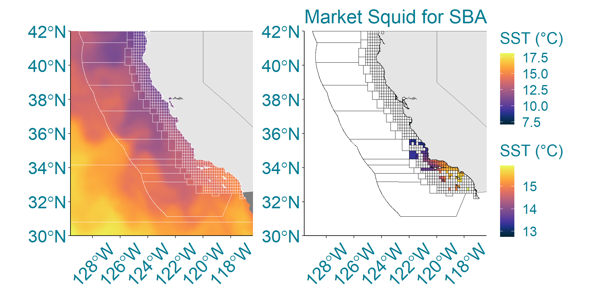
Random Forests excel in the train, but are underwhelming in the testing
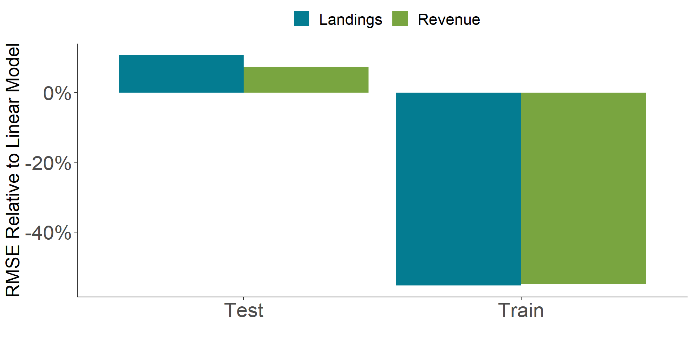
Linear models almost always payout leading to high desirability
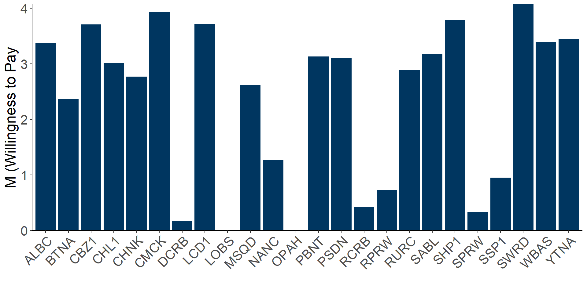
Crab example
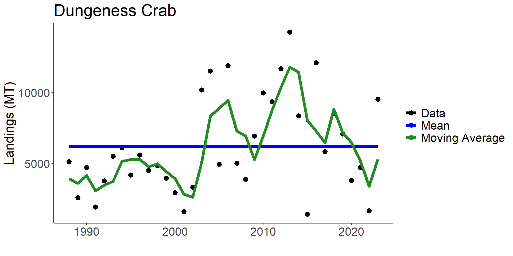
References
Chen, Zhanhui, Yang Lu, Jinggong Zhang, and Wenjun Zhu. 2024. “Managing Weather Risk with a Neural Network-Based Index Insurance.” Management Science 70: 4306–27. https://doi.org/10.1287/mnsc.2023.4902.
Clarke, Daniel J. 2016. “A Theory of Rational Demand for Index Insurance.” Journal: Microeconomics 8: 283–306. https://doi.org/10.1257/mic.20140103.
Conradt, Sarah, Robert Finger, and Martina Spörri. 2015. “Flexible Weather Index-Based Insurance Design.” Climate Risk Management 10: 106–17. https://doi.org/10.1016/j.crm.2015.06.003.
Herrmann, Mark, Joshua Greenberg, Charles Hamel, and Hans Geier. 2004. “Extending Federal Crop Insurance Programs to Commercial Fisheries: The Case of Bristol Bay, Alaska, Sockeye Salmon.” North American Journal of Fisheries Management. https://doi.org/10.1577/M02-086.1.
Kenduiywo, Benson K., Michael R. Carter, Aniruddha Ghosh, and Robert J. Hijmans. 2021. “Evaluating the Quality of Remote Sensing Products for Agricultural Index Insurance.” PLoS ONE 16 (October). https://doi.org/10.1371/journal.pone.0258215.